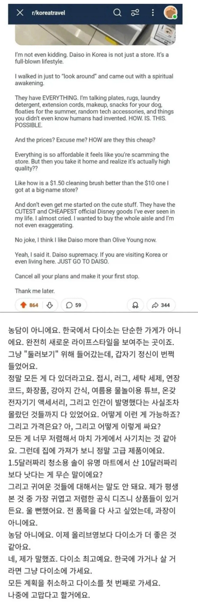
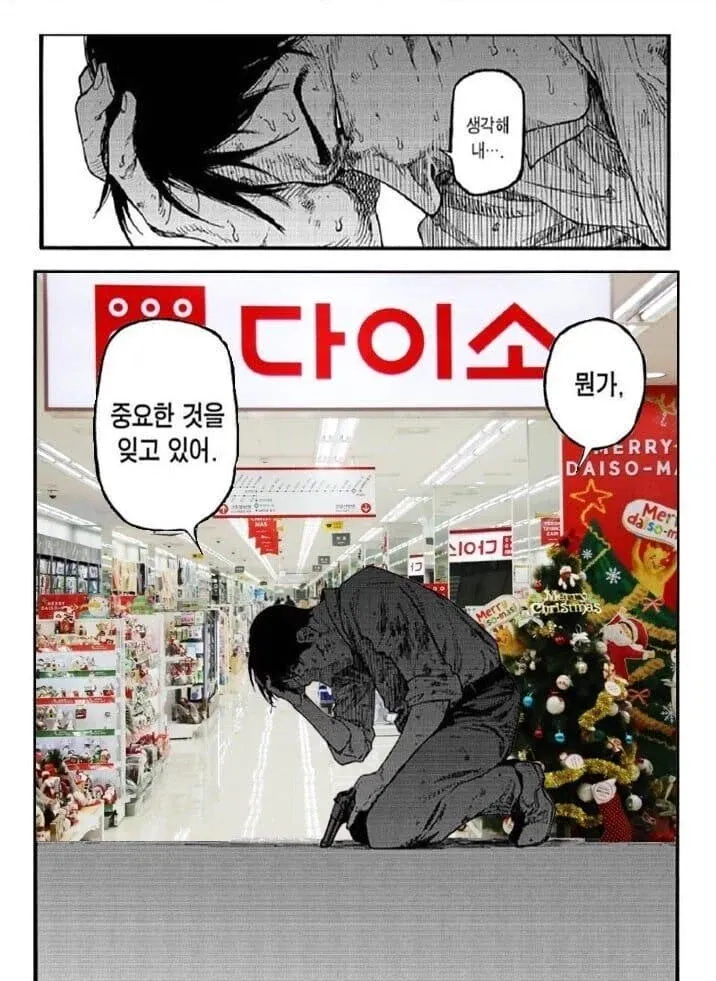

요즘은 외국인들도 많이 보이긴 함


요즘은 외국인들도 많이 보이긴 함
지방은 방치되고있음 ㅋㅋ
분명 좋은 물건은 아닌데 싼게 비지떡이라는 느낌은 아니고 2천원짜리가 그냥저냥 쓸만하다는 느낌을 주는게 대단함
ㅇㅇ 가격은 기성제품 절반 이하인데, 퀄리티는 8~90% 따라잡은거같은 애들이 많아.
여행이나 일로 며칠 내지 한 2주정도 있는거면 싸게 사서 쓰다 현지에서 폐기하는 게 더 편하기도 할 테니ㅋㅋㅋㅋ
다이소에 가면 나도 패리스 힐튼처럼 쇼핑할 수 있음. 막 엄청 고급 제품은 아니지만 자취인 입장에서 정말 고마움
솔직해지자 가격표 확인하며 살까 말까 들었다 놨다 한적없음?
필요한 것: 고무장갑, 청소용분무락스, 쿨패치
산 것: 태엽장난감벌레x3, 포테이토크리스프x2, 청소용분무락스, 디즈니샤워볼, 마스크 대, 마스크 중, 쿨패치x3, 3m테이프 리필, 철판화이트보드, a3 컷팅매트
결제하고 딴데가서 빵산담에 고무장갑 사러 다시 감 ㅅㅂ
밑짤보니 나도 생각났다 ㅋㅋㅋ 배터리 사러갔다가 막상 치약만 사옴 ㅋㅋㅋㅋㅋㅋㅋ 그리고 뭘 빼먹은거 같은데....이러고만있음
다이소 가서 등산용품 볼떄마다 그 동안 ㅆㅂ 얼마나 개호구였는지 화딱지만 남
개새끼들 오천원짜리를 3만원에 팔고 그 지랄 했구나 ㅋㅋㅋㅋㅋㅋ
사실 현지인들도 놀라워
물건을 제값받고 파는곳
'당장 OO 기능이 있는 물건이 필요하다'
다이소 가면 해결됨
다이소 좀 다닌 사람치고 살려고 하는거 까먹은적 없는 사람이 있을까. 있다면 엄청 계획적인 사람일듯.
그래서 살 물건 매직으로 팔에 문신 새기고 감
와이프가 여행계획세우면 분단위로 계획짜고 플랜 B까지 계획세우는 씹계획형인데 그런 와이프조차 다이소가면 살거 까먹음
가서 하는 하는 말도 사실 거의 정해져 있음 ㅋㅋㅋㅋ "우와" "이것봐" "이천원"
블루투스 키보드가 5천원인게 너무 신기함
알리익스프레스 천원마트에서 물건 사고 다이소 가면 알리보다 더 저렴한 경우도 많고
저번주에 그냥 동내네있는 다이소 갔는데 외국인 넘많더라 부산임
저거 만화 짤 원본 무슨 만화더라
아키라?
아인
저거 아인인가?
daiso supremacy ㅋㅋㅋㅋㅋㅋㅋㅋㅋㅋ
다이소 생각하고 돈키호테 갔는데 생각보다 비싸더라
스텐만 사지마라. sus304 라고 되어있는데 녹 엄청 잘슴.
나 필요한거 없는데~ 하고 들어가면 갑자기 막 생김;
자취생의 빛
집 근처에 규모 큰 다이소 있고 없고도 중요한듯 ㅋㅋㅋ
다세권!
거의 80~90%가 중국산이던데...
개붕이 너희들이 다이소에서 쓴 돈이 미사일이 되어 돌아와도 좋단 말이냐?
미니선풍기만은 조심하셈
작년 여름에 산 선풍기는 개쓰레기였음.
날개는 도는데 풍량이 거의 안느껴지는 역대급 산폐물 이었음.
환불받음
인간이 발명했던 사실을 몰랐던것들 << ㄹㅇ임 ㅋㅋ
다이소 물건이 전반적으로 가격이 싸니까 걍 대충 쓰다 버리자는 생각으로 샀는데 생각보다 품질이 좋아서 만족감이 높음 ㅋㅋㅋㅋ
집사람이 애들 심부름시켜서 다이소갔다
집에와서 한소리듣고 메모해서 다시감!
사오라는거 깜빡하고 지들 장난감 사와서 ㅋㅋㅋ
좀 큰다이소가면 동남아 여자가 쇼핑하면서 인방하는거 간간히 보이더라
다이소에서 파는 노징글라스 만원짜리 글랜캐런잔 카피제품을 천원에 파는데
전국적으로 품절이더라 시바꺼 ㅋㅋ